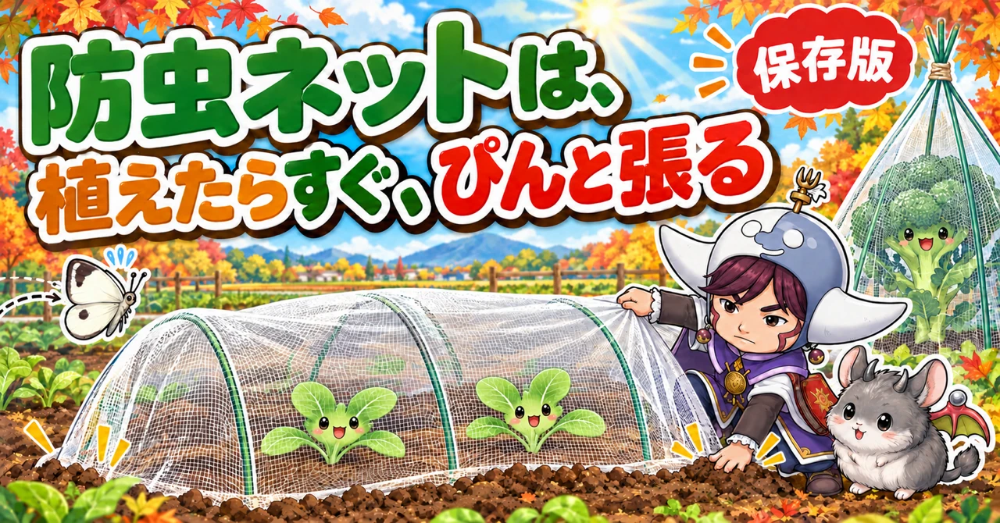
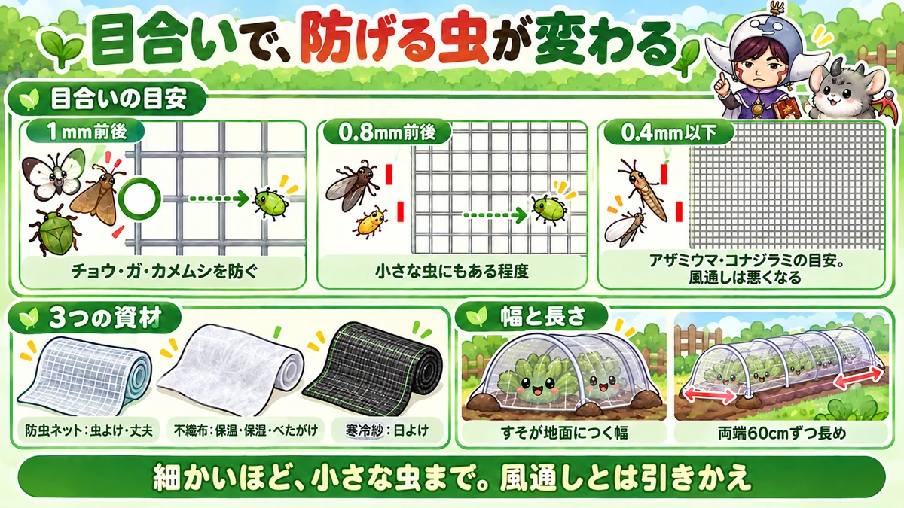
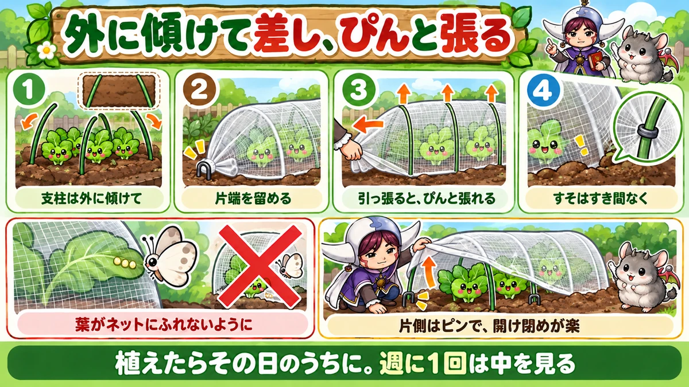
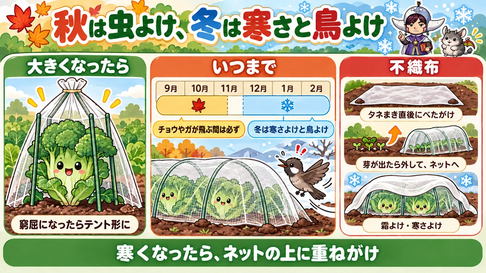

防虫ネットと不織布の使い方 決定版｜目合いの選び方、トンネルの張り方、外す時期、冬の使い方

📖 この記事の目次
この記事で分かること
- 防虫ネットは、薬を使わずに虫から野菜を守る、いちばん頼りになる資材です。チョウやガ、カメムシなど、外から飛んでくる虫が卵を産むのを防ぎます。
- 目合い（網の目の大きさ）が細かいほど小さな虫まで防げますが、そのぶん風通しが悪くなります。アブラムシやアザミウマのような小さな虫は、1mmの目合いではくぐり抜けてしまいます。
- かけるのは、苗を植えたらすぐ、タネをまいたらすぐ。間があくと、その間に卵を産まれます。
- ぴんと張ったトンネルにすると、開け閉めが楽で、葉がネットにふれにくくなります。葉がネットにふれていると、ネットごしに卵を産まれます。
- チョウやガが飛ぶ間（一般的な地域で11月中旬ごろまで）はかけておきます。冬は、防寒、風よけ、鳥よけとしても役立ちます。
- 不織布は、タネまき直後の乾燥と日差しよけ、霜よけ、冬の防寒に向いています。
- 防虫ネットは、穴をふさいで土を落としておけば、何年も使えます。
秋冬野菜を育てるとき、薬を使わずに育てたいなら、防虫ネットはなくてはならない資材です。けれども、「ネットをかけていたのに虫に食べられた」「いつ外せばいいか分からない」「張り方が悪くて、開けるたびにずり落ちる」といった声もよく聞きます。
防虫ネットは、選び方と張り方、使う時期を知っているかどうかで、効き目が大きく変わる資材です。同じネットでも、張り方ひとつで、虫の入りやすさも、開け閉めの手間も変わります。この記事では、防虫ネットを中心に、不織布や寒冷紗との使い分けもあわせて、順番に書いていきます。
早見：防虫ネット・不織布・寒冷紗の違い
3つの資材
- 防虫ネット：細い糸を網のように編んだもの。風と光をよく通し、虫を防ぐ。丈夫で何年も使える
- 不織布：細い繊維をからませて、うすい布のようにしたもの。軽く、保温と保湿にすぐれる。べたがけにも使える。破れやすい
- 寒冷紗：粗い目の布。日よけと防虫に使う。色や目の粗さで、日をさえぎる強さが違う
目合いの目安
- 1mm前後：チョウ、ガ、カメムシ、大きめの甲虫など。秋冬野菜の青虫やヨトウムシの親を防ぐ一般的なもの
- 0.8mm前後：小さな虫にもある程度効くが、完全には防げない
- 0.4mm以下：アザミウマやコナジラミなど、とても小さな虫を防ぐ目安。風通しは悪くなる
使う時期の目安（一般的な地域）
- 防虫ネット：苗を植えた直後、タネをまいた直後から。チョウやガが飛ぶ11月中旬ごろまでは必ず。冬も防寒や鳥よけに
- 不織布：タネまき直後（芽が出るまで）。春先の霜が心配なころ。真冬の寒さよけ
- 寒冷紗：夏のタネまきや育苗の日よけ。夏の強い日差しが苦手な野菜の日よけ

1年の使い方（一般的な地域の目安）
- 2〜3月：植えたじゃがいもや春の苗に、不織布で霜よけ。冬越し中の葉物は、重ねがけで寒さよけ
- 4〜5月：夏野菜の苗を植えたら、苗が小さいうちは防虫ネットで守る。不織布は霜の心配がなくなったら外す
- 6〜8月：夏のタネまきや育苗は、寒冷紗で日よけ。使わないネットは手入れをしてしまう
- 8〜9月：秋冬野菜のタネをまいたら不織布をべたがけ。芽が出たら防虫ネットのトンネルへ。苗を植えたらその日のうちにネット
- 9〜11月：防虫ネットは必ず。週に1回は中を見る。台風の前は補強
- 11〜12月：背の高い株はテント形に。冷えこんできたら不織布を重ねる
- 12〜2月：防寒と鳥よけ。寒波の日は1枚足す
防虫ネットの役割
いちばんの役割は、卵を産ませないこと
防虫ネットは、虫そのものを退治する道具ではありません。外から飛んでくるチョウやガ、カメムシなどが、野菜に近づいて卵を産むのを防ぐ道具です。
秋冬野菜の青虫やヨトウムシは、親のチョウやガが葉に産んだ卵からかえります。ネットで親を入れなければ、卵も幼虫も生まれません。薬を使わない家庭菜園では、これがいちばん効く虫よけになります。
特に、植えつけから10月ごろまでは、秋冬野菜の虫の被害がとても多い時期です。この時期に何もかけずにいると、あっという間に葉が穴だらけになります。
風、寒さ、鳥、雨からも守る
防虫ネットには、虫よけのほかにも、いくつかの役割があります。
- 風よけ：台風などの強い風で、苗がゆすられたり、倒れたりするのをやわらげる
- 雨よけ（少し）：強い雨が直接たたきつけるのを、ネットが少しやわらげる。泥はねも減る
- 寒さよけ（少し）：冷たい風が直接当たるのを防ぐ。ビニールほどの保温力はないが、何もないよりは守れる
- 鳥よけ：冬、えさの少ない時期に、鳥が葉を食べに来るのを防ぐ
防虫ネットで防げないもの
一方で、防虫ネットだけでは防げないものもあります。
- ネットの目より小さな虫（アブラムシ、アザミウマなど。目合いによる）
- 土の中にもともといる虫（ネキリムシ、コガネムシの幼虫、ヨトウムシのさなぎなど）
- 植えた苗に、はじめからついていた卵や幼虫
- すそのすき間や、破れたところから入った虫
- ネットに葉がふれているところで、ネットごしに産みつけられた卵
ネットをかけたのに虫に食べられた、という場合の多くは、このどれかです。ネットは「かけたら安心」ではなく、ほかの対策と組み合わせて使うものだと考えてください。
目合いの選び方
目が細かいほど、小さな虫まで防げる
防虫ネットには、目合い（網の目の大きさ）の違うものがあります。目合いが細かいほど、小さな虫まで防げます。
家庭菜園で一般的なのは、1mm前後の目合いのものです。チョウやガ、カメムシ、大きめの甲虫などは、これで防げます。秋冬野菜の青虫やヨトウムシの親を防ぐには、まずこれで十分です。
ところが、アブラムシやアザミウマのようなとても小さな虫は、1mmの目合いではくぐり抜けてしまいます。施設園芸では、コナジラミやアザミウマを防ぐには、0.4mm以下の目合いが推奨されています。0.8mm前後のネットは、小さな虫にもある程度の効き目はありますが、完全に防ぐのはむずかしいとされています。
細かいほど、風通しが悪くなる
目合いを細かくすると、そのぶん風が通りにくくなります。ネットの中が蒸れやすくなり、夏や残暑の時期には、中の温度が上がりすぎて、野菜が暑さで弱ることもあります。日の光も、少し通りにくくなります。
だから、「細かければ細かいほどよい」わけではありません。
- 秋冬野菜の青虫・ヨトウムシ対策が中心なら、1mm前後
- アブラムシが毎年ひどい場所や、小さな虫が媒介する病気を防ぎたいなら、細かめのもの
- まだ暑い9月に植える苗は、細かすぎるネットで蒸らさないように気をつける
と、守りたいものと季節で選びます。
銀色の糸入り、色つきのネット
防虫ネットの中には、銀色の糸を編みこんだものがあります。きらきらした反射を、アブラムシなどの虫が嫌うことを利用したものです。また、赤など色のついたネットもあり、特定の虫が寄りにくくなるとうたったものもあります。
こうしたネットの効き目は、虫の種類や使う場所によって違い、試験でも効果がはっきり出た例と、出なかった例があります。まずは目合いで選び、色や銀色の糸は、おまけと考えるのがよいでしょう。
幅と長さの決め方
ネットを買うときに迷うのが、幅と長さです。
- 幅：トンネルにかけたとき、すそが地面にしっかりつく幅が必要です。たとえば、幅60〜70cmのうねなら、幅180cmほどのネットを使うと、少し高めにトンネルを作っても、すそが土にふれる余裕があります。
- 長さ：うねの長さに、両端で地面に固定する分を足します。片側60cmずつ、あわせて120cmほど長めに切ると、端をしっかり留められます。たとえば3mのうねなら、4m20cmほど必要です。
足りないと、すそや端にすき間ができて、そこから虫が入ります。少し余るくらいが、ちょうどよい長さです。
トンネルの張り方
用意するもの
- 防虫ネット
- トンネル用の支柱（細い弓形の支柱や、アーチ形の支柱）
- ネットを支柱に留めるクリップ（トンネルパッカーなど）
- すそを留めるピンや、すそを埋めるための土
細い支柱なら50〜60cmおきに1本、太い支柱やアーチ形の支柱なら1m〜1.2mおきに1本が目安です。
張り方の手順
1．支柱を、うねの両側に、少し外側に傾けて差します。真上から見て、逆の「ハ」の字になるようにします。外側に傾けておくと、ネットを張ったときに、引っ張られて支柱がまっすぐ立ち上がり、ネットにほどよい張りが出ます。
2．ネットの片方の端を、丸めるようにまとめて、地面に差しこむか、ピンで留めます。
3．ネットを支柱の上にかけ、反対側の端まで広げます。
4．反対側の端を、片手でぴんと引っ張りながら、もう片方の手で余った分をたぐり寄せて、まとめます。引っ張ると、外に傾けた支柱がまっすぐ立ち上がり、ネットがぴんと張ります。
5．端をピンで仮止めし、余った部分をまとめて、しっかり留めます。
6．支柱ごとに、クリップでネットを支柱に留めます。
7．両側のすそを、土で埋めるか、ピンで地面に留めて、すき間をなくします。
ぴんと張る理由
ネットがゆるんでいると、開け閉めのたびにネットがたるんで、中の野菜にふれたり、作業中の手元に落ちてきたりします。風でばたついて、苗をこすることもあります。
ぴんと張ったトンネルなら、すそをめくっても、ネットが形を保ったまま、その位置にとどまってくれます。クリップで留めておけば、さらに作業しやすくなります。この張り方は、冬のビニールトンネルを張るときにも、そのまま使えます。
すそは、すき間なく
すそにすき間があると、そこから虫が入ります。土で埋める場合は、すその上に土をしっかりのせます。開け閉めが多い場合は、片側だけピンで留めて、もう片側は土をのせて重しにする、というふうに分けると、作業が楽になります。
開け閉めを楽にする工夫
見回りや収穫、追肥のたびにネットを開けるので、開け閉めのしやすさは大切です。
- 片側のすそは土で埋め、もう片側はピンで留めるだけにしておく。開けるときは、ピン側だけを外せばよい
- ぴんと張っておけば、片側をめくって支柱の上にかけておくだけで、ネットがその位置にとどまる
- クリップで支柱に留めておくと、めくったときにネットがずり落ちない
- 作業が終わったら、すそを元どおりに戻し、すき間がないか確かめる
開け閉めが面倒だと、見回りの回数が減ってしまいます。楽に開けられるようにしておくことが、虫の見落としを減らすことにもつながります。

かける時期と、かけたあと
植えたら、すぐかける
防虫ネットは、苗を植えたら、その日のうちにかけます。タネをまいた場合も、まいたらすぐです。
「芽が出てから」「苗が根づいてから」と間をあけると、その間にチョウやガが卵を産んでしまうことがあります。卵を産まれたあとにネットをかけると、中で幼虫がかえり、ネットの中で虫を育てることになってしまいます。
植える前に、苗と土を確かめる
ネットをかける前に、次のことを確かめておきます。
- 苗の葉の裏に、卵や小さな幼虫がついていないか
- 植える場所の土の中に、ヨトウムシのさなぎや、ネキリムシ、コガネムシの幼虫がいないか
ネットは外から入る虫を防ぐものなので、中にもともといる虫は防げません。かける前に取り除いておくことが、ネットを生かすこつです。
週に1回は、中を見る
ネットをかけたら安心、と放っておくのは禁物です。週に1回は、すそを開けて、中の野菜を見てください。
- 葉の裏に、卵や小さな幼虫、アブラムシがいないか
- 下の葉が枯れて、株元に湿気がたまっていないか
- ネットに破れや、すそのすき間がないか
枯れた下の葉は、そのままにしておくと湿気がこもり、病気や虫のもとになります。見回りのときに、取り除いておきます。
葉がネットにふれないように
野菜が大きくなると、葉がネットに押しつけられるようになります。ネットにふれた葉には、チョウやガが、ネットのすき間から卵を産みつけることがあります。
だから、トンネルは、育ったときの大きさを考えて、高さに余裕をもって作ります。葉がネットにふれはじめたら、次の「大きくなったら」の方法で、高さを足します。
残暑の時期は、中の暑さに注意
9月の植えつけ直後は、まだ真夏のような暑い日があります。目の細かいネットや、不織布を重ねたままにしていると、中に熱がこもって、苗がぐったりすることがあります。
- 暑い時期は、目の細かすぎないネットを使う
- 不織布のべたがけは、芽が出たら早めに外す
- 晴れた日の昼に、苗がしおれていないか見る。しおれていたら、朝夕の涼しい時間に水をやる
- 日差しが特に強い時期は、日よけを兼ねた寒冷紗一体型のネットを使う方法もある
雨や風のあとに点検する
強い雨や風のあとは、ネットがずれたり、すそがめくれたり、支柱が倒れたりしていることがあります。翌日には、ひと回りして直しておきます。
台風や強い風の前に
秋は台風の季節と、秋冬野菜の植えつけの時期が重なります。ふつうの風ならネットが外れることはほとんどありませんが、台風や強い風では、ネットごと飛ばされることがあります。台風が来る前に、次のことをしておきます。
- クリップで、ネットを支柱にしっかり留め直す
- すその上にのせた土を、いつもより厚く、しっかりのせる
- 背の高い株は、株元に支柱を斜めに立て、ひもでゆるく結んで支える（強く締めつけない）
- うね間に、深さ10cmほどの溝を掘って、雨水の逃げ道を作る
台風が過ぎたら、ネットのずれや破れ、支柱の倒れを点検して、すぐに直します。
株が大きくなったら
ブロッコリーやカリフラワーは、背が伸びる
ブロッコリー、茎ブロッコリー、カリフラワーなどは、背丈が高くなり、秋の終わりにはトンネルに収まらなくなってきます。ネットを突き上げるほどになると、葉がネットに押しつけられて、ネットごしに卵を産まれたり、葉が傷んだりします。
支柱を立てて、テント形にかけ直す
背が伸びた株は、支柱を立てて、ネットをテントのようにかけ直します。
1．150cmほどの支柱を、株元から15〜20cmほど離れたところに立てます。
2．もともと使っていた防虫ネットを、支柱の上からかぶせます。
3．支柱の頭のところで、ネットをひもで結んでまとめます。
4．すそは、株全体を包むようにまとめ、ひもで支柱にしばるか、地面に留めます。
支柱は、背が伸びた株が風であおられたときに、株を支える役にも立ちます。秋の終わりは虫が少なくなってくるので、すそに多少すき間があっても、大きな問題にはなりにくくなります。
収穫が近づいたら
収穫の時期になると、ネットを開ける回数が増えます。ブロッコリーの脇芽や、葉物を少しずつ収穫する場合は、収穫する側のすそだけを開けて、終わったらすぐに戻します。収穫のついでに、葉の裏の見回りもすませておくと、手間が1回ですみます。
白菜、キャベツは高さに余裕を
白菜は、縦に長く巻いていくので、外側の葉が上に伸び、ネットにふれやすくなります。キャベツも、巻きはじめると横に広がります。植えるときから、トンネルを少し高めに作っておくと、あとで困りません。
いつ外すか
チョウやガが飛ぶ間はかけておく
防虫ネットは、チョウやガが飛び回っている間はかけておきます。一般的な地域では、11月中旬ごろまでが目安です。最近は暖かい年が多く、12月に入っても暖かい日には飛ぶことがあるので、様子を見ながら判断します。
外しても、冬は別の役割がある
虫が少なくなった冬でも、ネットにはまだ役割があります。
- 冬の冷たい風から、葉を守る
- 雪が降ったあとなど、えさの少ない時期に、ヒヨドリなどの鳥が葉を食べに来るのを防ぐ
- 強い風で、背の高い株が倒れたり、根が浮いたりするのを防ぐ
鳥は、集団でやって来て、ブロッコリーやキャベツ、白菜の葉を、短い時間で丸坊主にしてしまうことがあります。冬もネットをかけておくと、こうした被害を防げます。
ビニールトンネルに切りかえる野菜
寒さに弱い野菜や、冬の間も育て続けたい葉物は、11月ごろから、防虫ネットをビニールのトンネルに切りかえる人もいます。ビニールは保温力が高いぶん、晴れた日中は中が暑くなりすぎるので、すそを開けて換気します。
重ねがけで寒さに備える
防虫ネット、不織布、穴のあいたビニールは、1枚ずつでは薄くて、保温の力はそれほど高くありません。けれども、何枚か重ねると、そのぶん暖かくなります。寒さに合わせて、着たり脱いだりするように重ねたり外したりできるのが、重ねがけの良いところです。
- 秋のうちは、防虫ネットだけ
- 冷えこんできたら、防虫ネットの上に不織布を重ねる
- 寒さの厳しい地域や、冬の間も育て続けたい葉物は、さらに穴のあいたビニールを重ねる
- 春が近づいて暖かくなってきたら、上から順に外していく
ビニールを重ねた日は、晴れた日中に中が暑くなりすぎないよう、すそを開けて換気します。
不織布の使い方
不織布の特徴
不織布は、細い繊維をからませて、うすい布のようにしたものです。軽くて、光と水をある程度通し、空気も通します。防虫ネットと比べると、次のような特徴があります。
- 保温と保湿にすぐれる
- とても軽いので、野菜の上に直接かける（べたがけ）ことができる
- 目がとても細かいので、小さな虫も入りにくい
- 破れやすく、何年も使うのはむずかしい
- 風通しは防虫ネットより悪い
タネまき直後のべたがけ
秋冬野菜のタネをまいたら、不織布をうねの上に直接かけておくと、芽がそろいやすくなります。
- 土の水分の蒸発を抑えて、乾燥を防ぐ
- 強い日差しをやわらげる（9月はまだ真夏のような暑さの日がある）
- 強い雨で、まいたタネが流れたり、土がたたかれてかたくなったりするのを防ぐ
- 急に冷えこんだ日にも、少し保温してくれる
- 芽が出たばかりの小さな苗を、虫から守る
かけ方は簡単です。うねの大きさに合わせて切った不織布を、うねの上に広げ、四すみと、途中の何か所かに土をのせて、風で飛ばされないようにします。
芽が出てきたら、不織布は外します。そのままかけっぱなしにすると、苗がひょろひょろと伸びたり、蒸れたりします。外すときは、四すみを持って、土を払いながらそっと持ち上げます。芽がそろったら、すぐに防虫ネットのトンネルにかけ替えます。
べたがけと、トンネルがけ
不織布のかけ方には、2つあります。
- べたがけ：野菜やうねの上に、直接ふわりとかける。支柱が要らず手軽。タネまき直後や、背の低い葉物、寒波の日の一時的な寒さよけに向く
- トンネルがけ：支柱の上からかけて、トンネルにする。野菜にふれないので、葉が傷みにくい。背の伸びる野菜や、長い期間かけておく場合に向く
べたがけは手軽ですが、風で不織布がこすれて、葉先が傷むことがあります。長くかけるなら、トンネルがけのほうが安心です。
春先の霜よけ
春先、植えたじゃがいもの芽が出てきたころや、植えたばかりの苗は、遅い霜に当たると、葉が傷んで枯れてしまうことがあります。霜が心配な夜は、不織布をふわりとかけておくと、霜から守れます。
背丈の伸びてきたじゃがいもは、支柱やトンネルの骨組みの上から、不織布をかけておくと、手間をかけずに守れます。日中暖かくなる日は、蒸れないように、すそを開けておきます。
冬の防寒
冬の寒さが厳しい時期には、防虫ネットの上から、さらに不織布を重ねてかけると、防寒の力が増します。寒波が来る日だけ、1枚足す、という使い方もできます。
不織布を使うときの注意
- ぴったり押しつけるようにかけると、葉が傷むことがある。ふんわりと、少し余裕をもってかける
- 暖かい日にかけっぱなしにすると、中が蒸れて、苗がひょろひょろになる
- 破れやすいので、すそを留めるときに引っ張りすぎない
- あまり安いものは薄く、すぐに破れることがある。ある程度しっかりしたものを選ぶ

寒冷紗の使い方
日よけと虫よけ
寒冷紗は、粗い目の布で、主に日よけに使います。夏のタネまきや育苗のときに、強い日差しから苗を守ったり、半日陰を好む野菜（みょうがなど）の日よけにしたりします。防虫ネットと一体になった寒冷紗もあり、虫よけと日よけを兼ねられます。
色と目の粗さで、日のさえぎり方が変わる
寒冷紗には、白や黒などの色があり、目の粗さによっても、日をさえぎる強さが違います。黒いものほど、日を強くさえぎります。日をさえぎりすぎると、野菜がひょろひょろになるので、夏の一番暑い時期だけ、苗が小さい時期だけ、と期間を決めて使います。
ビニールトンネルとの違い
冬によく使うビニールのトンネルは、防虫ネットや不織布よりずっと保温力が高く、寒い時期にも野菜を育て続けることができます。一方で、風や湿気をほとんど通さないので、晴れた日中は中が暑くなりすぎ、湿気もこもります。
- 防虫ネット：虫よけが中心。風と光をよく通す。保温は少し
- 不織布：保温と保湿。軽くてべたがけもできる。空気も少し通す
- ビニール：保温が強い。換気が欠かせない。穴あきのものは、換気の手間が少し減る
寒さの度合いと、どれだけ手をかけられるかで、使い分けます。
長持ちさせる使い方
何年も使える
防虫ネットは、買うときは少し高く感じますが、手入れをすれば何年も使えます。10年以上使い続けている人もいます。毎回新品にする必要はありません。
しまう前の手入れ
- 穴があいていないか確かめ、小さな穴は、ネットの切れ端や補修テープでふさいでおく
- ついた泥や土を落とす。水洗いが面倒なら、何日か干しておけば、乾いた土は自然に落ちる
- よく乾かしてから、たたんでひもで結び、日の当たらない場所にしまう
穴に気づかないまま次に使うと、そこから虫が入ります。しまう前の点検が、次の季節の虫よけの第一歩です。
ほかの使い方
防虫ネットは、畑のいろいろな場面で使えます。
- 夏の日よけ：作業場所や、苗を置く場所のまわりに張ると、日差しをやわらげ、虫も入りにくくなる
- 冬の鳥よけ：収穫を待つ株にかぶせておく
- 強い風よけ：背の高い株のまわりを囲う
説明が分かれるところ
目合いは細かいほうがいいか
細かい目合いなら小さな虫まで防げる一方、風通しが悪くなって、暑い時期は中が蒸れる心配があります。「アブラムシまで防ぎたいので細かいもの」という考え方と、「風通しを優先して1mm前後、アブラムシは見回りで対処」という考え方があります。季節と、何を一番防ぎたいかで選んでください。
冬もかけておくか、外すか
「虫がいなくなったら外して、日当たりをよくする」という考え方と、「防寒や鳥よけのために冬もかけておく」という考え方があります。鳥の被害が多い場所や、風の強い場所では、冬もかけておくほうが安心です。
銀色の糸入りは効くか
反射で虫が寄りにくくなる、という考え方がある一方、どのくらい効くかははっきりしない、という声もあります。目合いのほうが大切だと考え、銀色の糸はおまけ程度に考えておくのがよいでしょう。
よくある失敗
植えてから何日かたってかけた
その間に卵を産まれて、ネットの中で幼虫がかえります。植えたらすぐにかけます。
すそにすき間があった
すき間から虫が入ります。すそは土で埋めるか、ピンでしっかり留めます。
葉がネットにふれたままだった
ネットごしに卵を産まれます。トンネルは高さに余裕をもって作り、大きくなったらテント形にかけ直します。
かけっぱなしで中を見なかった
中でアブラムシが増えていた、幼虫がいた、ということがよくあります。週に1回は中を見ます。
不織布をかけっぱなしにした
芽が出たあともかけたままにすると、苗がひょろひょろになったり、蒸れたりします。芽が出たら外して、防虫ネットにかけ替えます。
よくある質問
ネットの中にアブラムシがいます
1mm前後の目合いでは、アブラムシはくぐり抜けることがあります。また、苗にはじめからついていたこともあります。見つけたら、刷毛で払うか、水で洗い流します。毎年ひどい場合は、細かめの目合いのネットを試してみてください。
夏野菜にも防虫ネットは要りますか
なすやきゅうりなどの夏野菜も、植えたばかりの苗のうちは、ネットをかけておくと、ウリハムシやアブラムシなどから守れます。株が大きくなって花が咲くころには、受粉のために虫が出入りできるよう、外すのが一般的です。
玉ねぎやにんにくにも要りますか
玉ねぎやにんにくは、秋冬野菜の葉物ほど虫の被害は多くありません。ただ、冬の寒さで葉先が大きく傷んでしまう場合や、寒い地域では、不織布や防虫ネットで寒さよけをしたり、穴のあいたビニールのトンネルをかけたりすることもあります。トンネルの中は雑草も育ちやすいので、ときどき開けて草を取ります。
ほうれん草や春菊、レタスにも要りますか
アブラナの仲間ほどではありませんが、ほうれん草、春菊、レタスなども、虫に食べられることがあります。特に芽が出たばかりのころや、植えたばかりのころは、ネットをかけておくと安心です。
ネットに穴があいてしまいました
小さな穴なら、ネットの切れ端を当てて、ひもや結束バンドでとめるか、補修用のテープでふさぎます。穴をそのままにすると、そこから虫が入りこみます。シーズンの途中で見つけた穴も、気づいたその日にふさいでおきます。
夏野菜の苗に、ネットをかけるのはいつまでですか
きゅうりやかぼちゃの苗は、植えたばかりのころ、ウリハムシに葉を食べられやすく、なすやピーマンの苗もアブラムシがつきやすい時期です。苗が小さいうちは、防虫ネットのトンネルをかけておくと安心です。
ただし、実をつける野菜は、花が咲くと、虫に花粉を運んでもらう必要があるものがあります。株が大きくなってトンネルに収まらなくなり、花が咲きはじめたら、ネットを外すのが一般的です。外したあとは、見回りで虫を見つけて取ります。
ネットと不織布、どちらを買えばいいですか
秋冬野菜を育てるなら、まず防虫ネットです。何年も使えて、虫よけの中心になります。不織布は、タネまきのときや、霜・寒さよけに1枚あると便利です。
プランターでも使えますか
使えます。プランター用の小さな支柱とネットのセットもありますし、プランターごと大きな袋状のネットで包む方法もあります。ベランダでもチョウは飛んでくるので、葉物やキャベツの仲間を育てるなら、ネットをかけておきます。
学ぶ：防虫ネットと不織布のしくみ🔬
なぜ、目合いで防げる虫が違うのか
ネットを通り抜けられるかどうかは、虫の体の大きさ（特に、体のいちばん太いところの幅）と、網の目の大きさで決まります。チョウやガ、カメムシは体が大きいので、1mmの目は通れません。一方、アブラムシやアザミウマは、体の幅が1mmよりずっと小さいので、すき間をくぐり抜けてしまいます。
目合いを細かくすると、通れる虫は減りますが、網の糸が増えるぶん、空気の通り道も狭くなります。虫を防ぐ力と、風を通す力は、いつも引きかえの関係にあるのです。
なぜ、不織布をかけると暖かいのか
不織布をかけると、不織布と地面の間に、空気の層ができます。この空気の層が、地面から逃げていく熱をとどめ、冷たい風が直接当たるのを防ぎます。また、不織布は光をある程度通すので、昼は日の光で地面が温まり、その熱が夜まで少し残ります。霜は、地面や葉の表面が冷えこんでできるので、この空気の層があるだけで、霜が降りにくくなるのです。
なぜ、ぴんと張ると形が保てるのか
外側に傾けて差した支柱は、ネットを引っ張ると、ネットの張る力で内側に引き戻され、まっすぐに立ち上がります。このとき、支柱には「外へ戻ろうとする力」が残っていて、その力がネットを外側へ引っ張り続けます。支柱とネットが互いに引っ張り合うことで、トンネル全体の形が保たれるのです。ゆるく張ったトンネルでは、この引っ張り合いがないので、風や重みで形がくずれやすくなります。
なぜ、ネットにふれた葉に卵を産むのか
チョウは、葉にとまって、においや味で野菜の種類を確かめてから卵を産みます。葉がネットにふれていると、チョウはネットの外側にとまったまま、すぐ下の葉を確かめ、網目のすき間からおしりを差しこんで卵を産むことができます。ネットと葉の間にすき間があれば、チョウは葉に届かず、卵を産めません。トンネルの高さに余裕を持たせるのは、このためです。
まとめ
ここまで読んでくださって、ありがとうございます！
防虫ネットと不織布の使い方のポイントを、もう一度まとめておきます。
- 防虫ネットは、外から飛んでくる虫に卵を産ませない道具。土の中の虫や、苗についていた卵は防げない
- 目合い1mm前後でチョウやガは防げる。アブラムシやアザミウマはくぐり抜けることがある。細かいほど風通しは悪くなる
- 幅は、すそが地面にしっかりつく余裕を。長さは、うねより120cmほど長めに
- 支柱は外に傾けて差し、ネットをぴんと張る。すそはすき間なく
- 植えたらすぐ、タネをまいたらすぐかける。かける前に苗の裏と土を確かめる
- 週に1回は中を見る。葉がネットにふれないよう、高さに余裕を
- 背が伸びたら、支柱を立ててテント形に
- チョウやガが飛ぶ11月中旬ごろまでは必ず。冬も防寒と鳥よけに
- 不織布は、タネまき直後のべたがけ、霜よけ、冬の防寒に。芽が出たら外す
- しまう前に、穴をふさぎ、土を落として乾かす。何年も使える
- 台風の前は、クリップとすその土で補強し、背の高い株は支柱で支える
- 残暑の時期は、中が暑くなりすぎないように。寒くなったら重ねがけ
防虫ネットは、ひと手間かけて張るだけで、薬を使わない家庭菜園をぐっと楽にしてくれる資材です。かけたあとも、週に1回の見回りと、季節に合わせたかけ替えを続ければ、秋から冬まで、野菜を虫と寒さと鳥から守り続けてくれます。まずは次に苗を植えるとき、その日のうちに、ぴんと張ったトンネルをかけてみてください🥬
防虫ネット
秋冬野菜の守りの要。植えたらその日のうちにトンネルにして、すそは土で埋めます。何年も使えます。


不織布
タネまき直後のべたがけ、春の霜よけ、冬の重ねがけに。1枚あると季節を問わず使えます。
![[商品価格に関しましては、リンクが作成された時点と現時点で情報が変更されている場合がございます。]](https://hbb.afl.rakuten.co.jp/hgb/56bc237a.e97551b1.56bc237b.2513ed10/?me_id=1310260&item_id=10000879&pc=https%3A%2F%2Fthumbnail.image.rakuten.co.jp%2F%400_mall%2Fdiokasei%2Fcabinet%2F007fusyokufu%2F12g%2Fimgrc0092049705.jpg%3F_ex%3D240x240&s=240x240&t=picttext "[商品価格に関しましては、リンクが作成された時点と現時点で情報が変更されている場合がございます。]")
トンネル用ビニール
冬の間も葉物を育て続けたいときに。晴れた日中は、すそを開けて換気します。
![[商品価格に関しましては、リンクが作成された時点と現時点で情報が変更されている場合がございます。]](https://hbb.afl.rakuten.co.jp/hgb/56bc237a.e97551b1.56bc237b.2513ed10/?me_id=1310260&item_id=10001120&pc=https%3A%2F%2Fthumbnail.image.rakuten.co.jp%2F%400_mall%2Fdiokasei%2Fcabinet%2F010maruti-bini-ru%2Fbini-ruopri%2F413190.jpg%3F_ex%3D240x240&s=240x240&t=picttext "[商品価格に関しましては、リンクが作成された時点と現時点で情報が変更されている場合がございます。]")
あわせて読みたい


次に読む
記事一覧へ